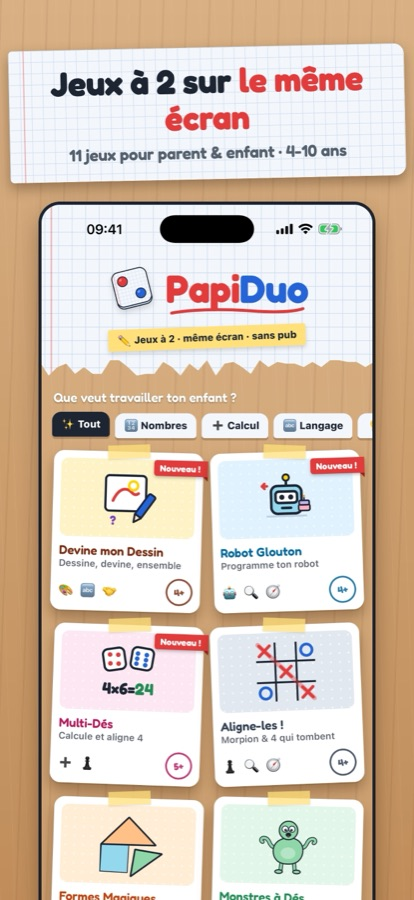
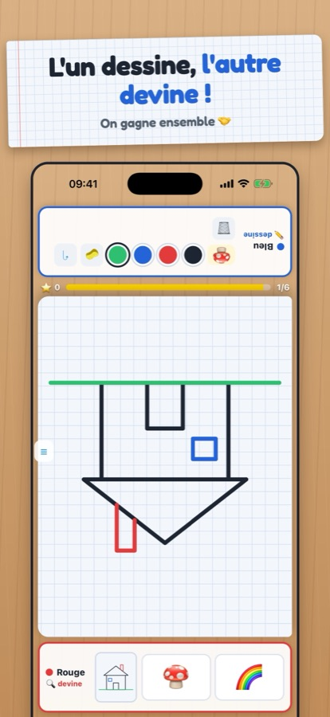
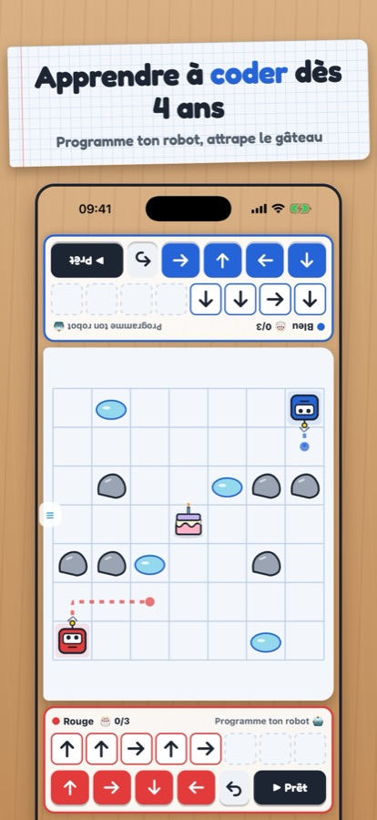
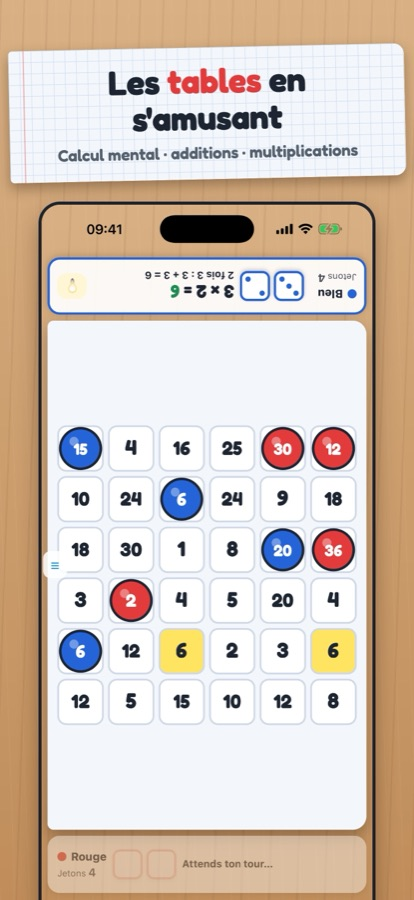
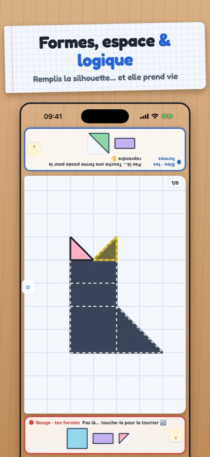
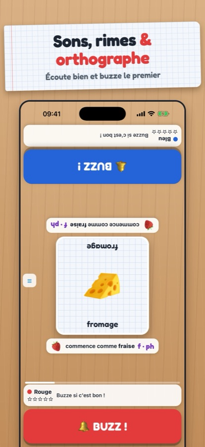
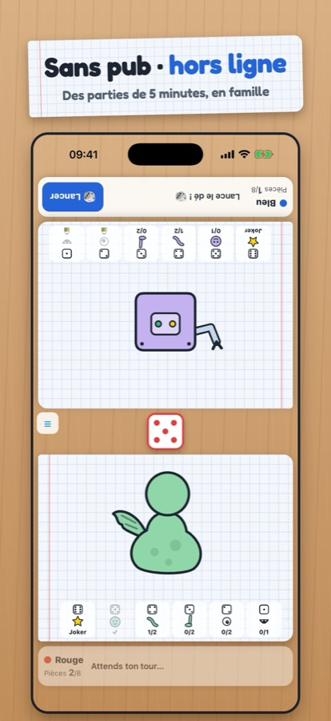

Des jeux à deux pour apprendre en jouant ensemble
Posez le téléphone ou la tablette entre vous deux : chacun son côté, face à face. 11 jeux « papier, crayon et dés » pour les 4-10 ans et leurs parents.
📱Bientôt sur l'App Store
Pourquoi PapiDuo ?
Face à face
Un seul écran posé entre vous : chaque joueur a son côté, la moitié d'en face est retournée. On se regarde, on rit, on joue ensemble.
Chaque jeu apprend quelque chose
Calcul et tables, sons et orthographe, mémoire, logique, programmation, formes… Choisissez ce que votre enfant veut travailler.
L'enfant a sa chance
Niveaux de 4 à 10 ans, coups de pouce pour équilibrer parent et enfant, aides qui expliquent au lieu de punir, voix pour ceux qui ne lisent pas encore.
11 jeux, une compétence chacun
Devine mon Dessin
Dessine, devine, ensemble
Robot Glouton
Programme ton robot
Multi-Dés
Calcule et aligne 4
Aligne-les !
Morpion & 4 qui tombent
Formes Magiques
Remplis la silhouette
Monstres à Dés
Construis ton monstre
Chasse aux Sons
Écoute et buzze !
Cache-Cache Chiffres
Retiens où ils sont
Duel Aérien
Abats 2 avions
Ferme la Boîte
Additionne les dés
Pipopipette
Ferme des carrés
En images






Questions fréquentes
C'est vraiment gratuit ?
Oui : tous les jeux, sans publicité et sans achat.
Faut-il internet ou un compte ?
Non. PapiDuo fonctionne entièrement hors ligne, sans inscription. Aucune donnée n'est collectée.
Pour quel âge ?
De 4 à 10 ans, avec un adulte ou un autre enfant. Chaque jeu a des niveaux adaptés.
Et si on joue seul ?
Presque tous les jeux ont un mode « Contre l'ordinateur » à 3 niveaux.
Sur quels appareils ?
iPhone et iPad. L'iPad posé à plat entre deux joueurs, c'est l'idéal.